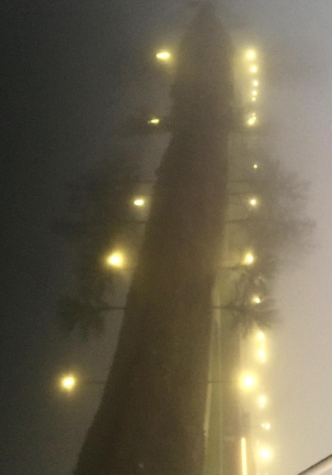

Welcome to my website. It is intentionally simple, and "intentionally" poorly designed.
I am a math major at Willamette, and hopefully soon to be off to pursuing a PhD in math.
I am a lover of mathematics,
of ancient Chinese language and poetry,
of walks, of the cold,
of coffee and mornings,
of water and ice,
of oceans and dark skies,
of beer,
of foggy forests and mountains,
of symmetry,
of loops and reflections and shadows and projections.
I love words and riddles and thoughts passing and profound,
of grammatically interesting and incorrect sentences,
of stars and lights, and the roots of polynomails.
Also my favorite Lord of the Rings character is Tom Bombadil